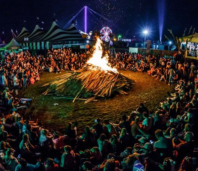
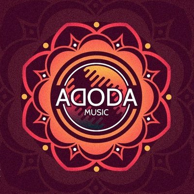
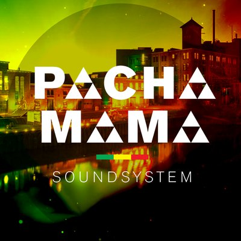
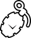

vrijdag
23:00-00:00
Kampvuursessie
RAUWKOST vindt plaats op 7 verschillende binnenlocaties. Je ziet dus nooit tegelijk wie er allemaal aanwezig zijn. Daarom scharen we ons vlak voordat het feestgedruis losbarst allemaal op één moment samen rond het kampvuur, om samen de nacht in te luiden. Ondertussen kunnen ze binnen even alles ombouwen voor het nachtprogramma.

vrijdag
00:00-04:00
Adoda
Decennia lang dacht men dat alles om de aarde draaide, totdat de theorie van Copernicus stelde dat alles juist om de zon draait. Toen kwamen de jonge honden van Adoda; na jaren lang dansen, plaatjes draaien, produceren en filosoferen zagen zij een nieuw licht. Geen van bovenstaande theorieën hebben het bij het juiste eind, waar het om draait is niet belangrijk, zolang we maar kunnen dansen.


vrijdag
00:00-04:00